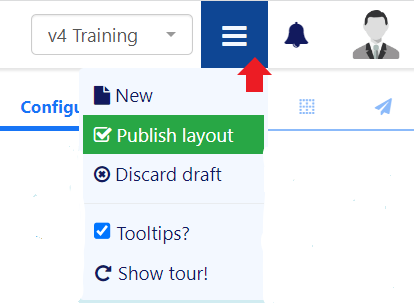

Publishing Layouts
Once your Layout design is complete you must ensure that you Publish your Layout before Scheduling. Use the Menu located to the far right of the status bar to view all options for your Layout:

Options shown are dependent on whether your Layout is in a Draft or Published status.
Discard draft to revert back to the previous Published version and discard all changes.
Layouts can be Published straight away to push updates automatically to Layouts that are already in the schedule. A Publish Date can be set to determine a specified date and time to Publish:

Administrators can use the default setting on the CMS Settings page to automatically Publish draft Layouts 30 minutes after the last edit.
Checkout
Published Layouts can be edited by selecting to Checkout to create a draft of the Layout.
Users can select the ‘auto submit’ check box so that this form is automatically sent each time that Checkout is selected.
Users can take their time with any edits that need to be made as a Layout in a draft status will not reflect any changes to the published version. Scheduled Displays will continue to show the Published version of the Layout.
- Make the changes permanent and overwrite the existing Layout by selecting to Publish. Once Published Scheduled Layouts will show the changes made.
- Discard will revert the Layout back to its original published state, with no changes made to the Scheduled Layout.
Use the row menu from the Layouts grid to access a list of actions and shortcuts!
Unlock Layout
If a User attempts to edit a Layout that is already being edited by another User of the CMS, the Layout will lock to prevent editing by the User. The Layout will remain locked for a specified amount of time (as shown in the lock message) or until Unlock Layout is selected by the initial User.
Users will be redirected to the Layout grid on unlocking a Layout to release it for another User to make edits.